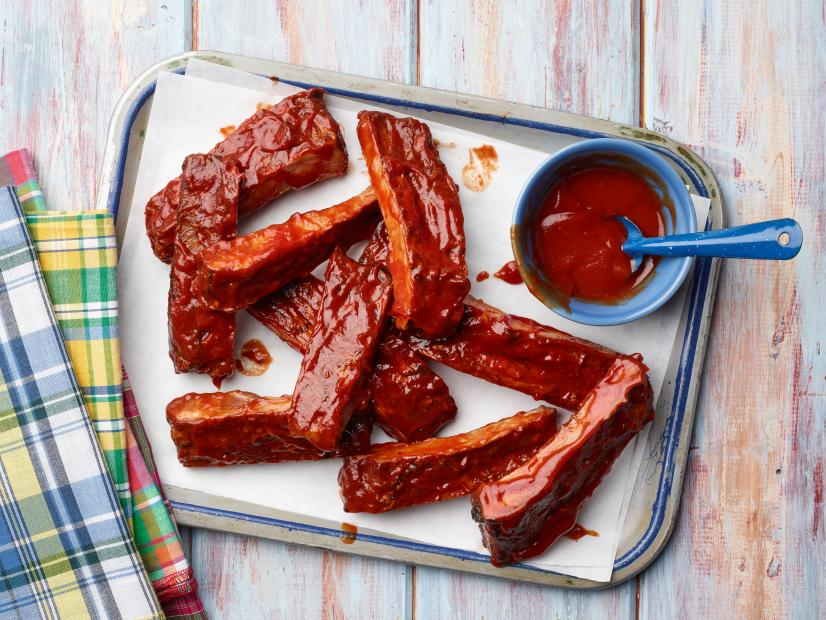

Air fryer Spare Ribs

Description
Everyone loves a good rib! Here's a quick and easy dinner meal that
reminds you of summer BBQ's.
Ingredients
- Kosher salt
- Freshly ground pepper
- 3 tsp paprika
- 2 1/2 - 3lbs St. Louis-style pork ribs, separated
- 2 cups ketchup
- 1/3 cup apple cider vinegar
- 1/3 cup distilled white vinegar
- 1/3 cup packed dark brown sugar
- 2 tbsp Worcestershire sauce
- 1-2 tsp hot sauce (optional)
Steps
- Preheat air fryer.
-
Mix the 1 tbsp salt, 2 tbsp pepper, and 1 tsp of paprika in a small
bowl. Season the ribs with this mixture.
- Place ribs into air fryer basket.
-
Cook for about 40 mins at 350 degrees F, or until ribs are tender and
golden brown.
-
Combine Ketchup, cider vinegar, brown sugar, Worcestershire sauce, hot
sauce, 2 tsp salt, 2 tsp pepper, 3/4 cup water, 2 tsp paprika in a
medium saucepan.
-
Cook over medium heat, stirring frequently until everything is well
combined, about 2 mins. Cover and reduce heat to low to keep the sauce
warm.
-
Once the ribs are finish cooking, brush or dip ribs in the sauce. Serve
remaining sauce on the side and enjoy!